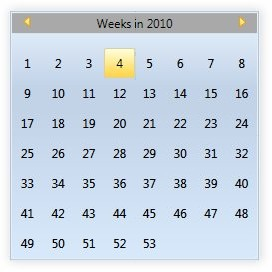
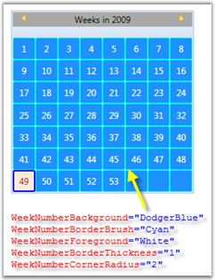
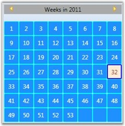
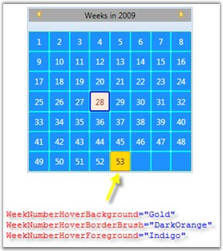

It is now possible to edit weekly date in CalendarEdit control. This is achieved by using the IsShowWeekNumbersGrid property.
The following code snippet illustrates this.
|
[XAML]
<!--Calendar Edit--> <syncfusion:CalendarEdit Name="calendar" IsShowWeekNumbersGrid="{Binding ElementName = cbShowWeekNumbersGrid, Path=IsChecked, Mode=TwoWay}/>
<CheckBox Name="cbShowWeekNumbersGrid" IsChecked="False" IsEnabled="False"> Show Week Numbers Grid</CheckBox> |
|
[C#]
//Binding IsShowWeekNumbersGrid property to CheckBox Binding b = new Binding(); b.Source = calendar; b.Mode = BindingMode.TwoWay; b.Path = new PropertyPath("IsShowWeekNumbersGrid"); BindingOperations.SetBinding(cbShowWeekNumbersGrid, CheckBox.IsCheckedProperty, b); |
Run the code. The output is as follows:

Figure 72: IsShowWeekNumbersGrid Property set as True
1. Changing Week Number Grid’s Default Properties
You can set the color for the border brush, background and foreground for the cells in the Week Numbers Grid. You can also set the corner radius and thickness for the border of the cells in the Week Numbers Grid.
The following code snippet illustrates this.
|
[XAML]
<!--Calendar Edit with Week Number Default Properties--> <syncfusion:CalendarEdit WeekNumberBackground="DodgerBlue" WeekNumberBorderBrush="Cyan" WeekNumberForeground="White" WeekNumberBorderThickness="1" WeekNumberCornerRadius="2" /> |
|
[C#]
//Calendar Edit with Week Number Default Properties CalendarEdit calendar = new CalendarEdit(); calendar.WeekNumberBorderBrush = Brushes.Cyan; calendar.WeekNumberCornerRadius = new CornerRadius(2); calendar.WeekNumberBorderThickness = new Thickness(1); calendar.WeekNumberBackground = Brushes.DodgerBlue; calendar.WeekNumberForeground = Brushes.White; |
Run the code. The output is as follows:

Figure 73: WeekNumber Default Properties
2. Changing Week Number Grid’s Selection Properties
You can set the border brush, background and foreground color for the required cell in the Week Numbers Grid. You can also set the corner radius and thickness for the border of the selected cell in the Week Numbers Grid.
The following code snippet illustrates this.
|
[XAML]
<!--Calendar Edit with Week Number Selection Properties--> <syncfusion:CalendarEdit WeekNumberSelectionBackground="AntiqueWhite" WeekNumberSelectionBorderBrush="Blue" WeekNumberSelectionForeground="Brown" WeekNumberSelectionBorderThickness="2" WeekNumberSelectionBorderCornerRadius="2" /> |
|
[C#]
// Calendar Edit with Week Number Selection Properties CalendarEdit calendar = new CalendarEdit();
calendar.WeekNumberSelectionBorderBrush = Brushes.Blue; calendar.WeekNumberSelectionBorderCornerRadius = new CornerRadius(2); calendar.WeekNumberSelectionBorderThickness = new Thickness(2); calendar.WeekNumberSelectionBackground = Brushes.AntiqueWhite; calendar.WeekNumberSelectionForeground = Brushes.Brown; |
Run the code. The output is as follows:

Figure 74: WeekNumber Selection Properties
3. Changing Week Number Mouse Over Properties
You can set the border brush, background and foreground color for the cell focused in the Week Numbers Grid.
The following code snippet illustrates this.
|
[XAML]
<!--Calendar Edit with Week Number Mouse Over Properties--> <syncfusion:CalendarEdit WeekNumberHoverBackground="Gold" WeekNumberHoverBorderBrush="DarkOrange" WeekNumberHoverForeground="Indigo" /> |
|
[C#]
// Calendar Edit with Week Number Mouse Over Properties CalendarEdit calendar = new CalendarEdit(); calendar.WeekNumberHoverBorderBrush = Brushes.DarkOrange; calendar.WeekNumberHoverBackground = Brushes.Gold; calendar.WeekNumberHoverForeground = Brushes.Indigo; |
Run the code. The output is as follows:

Figure 75: WeekNumber MouseOver Properties